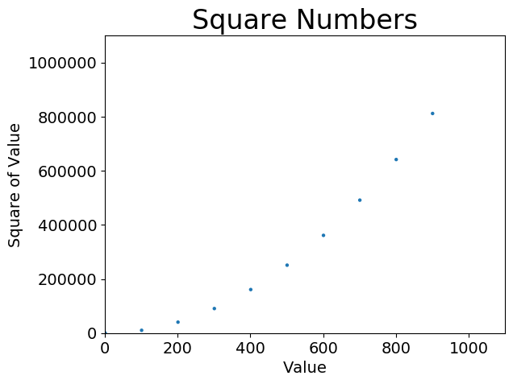
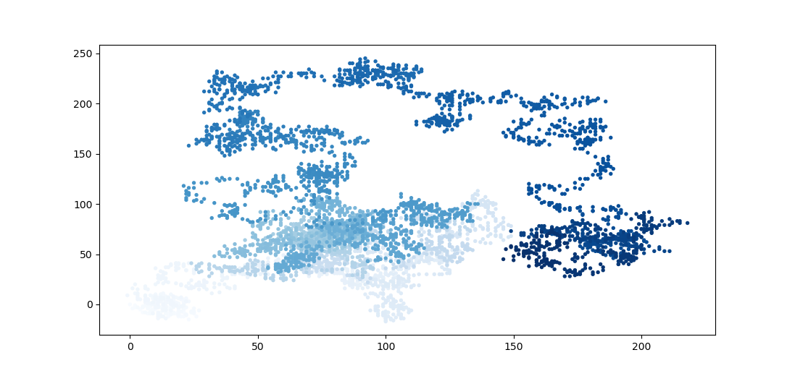
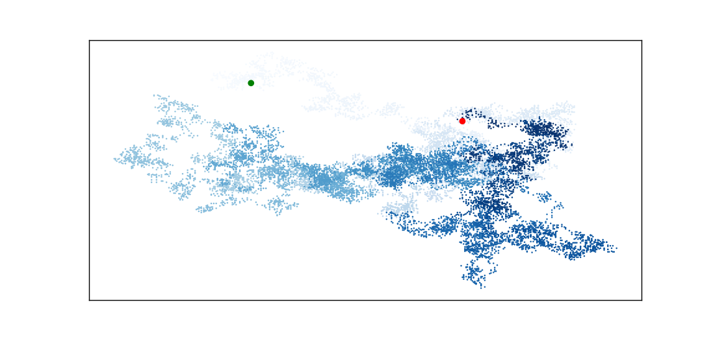
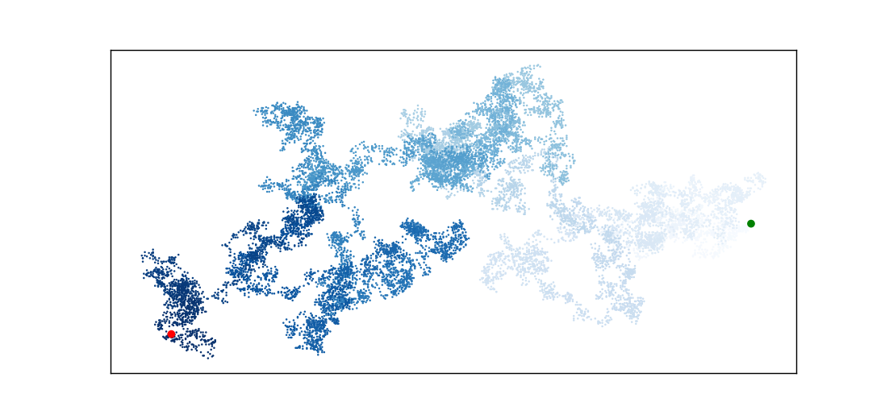
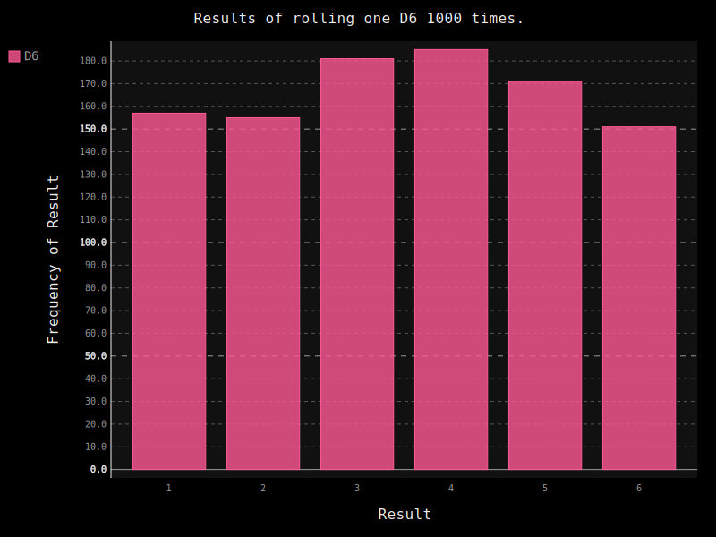
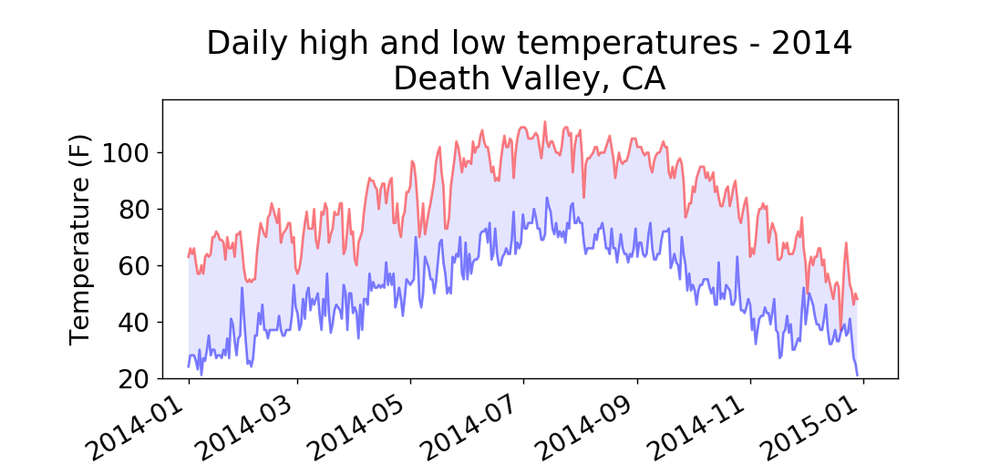
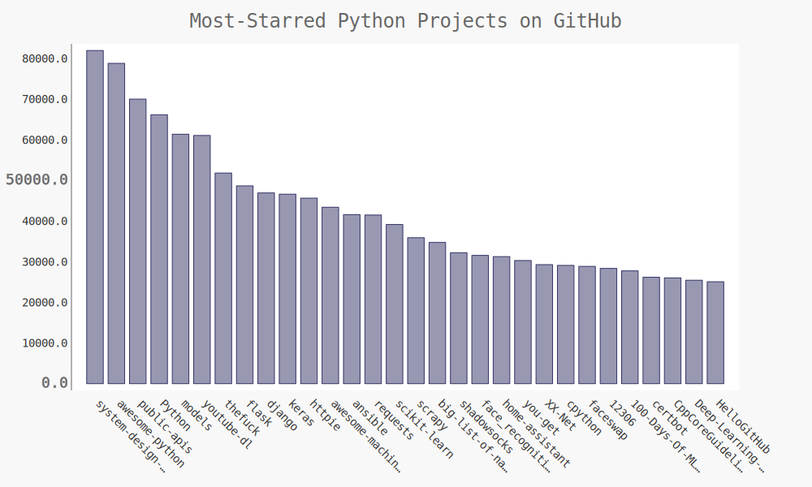
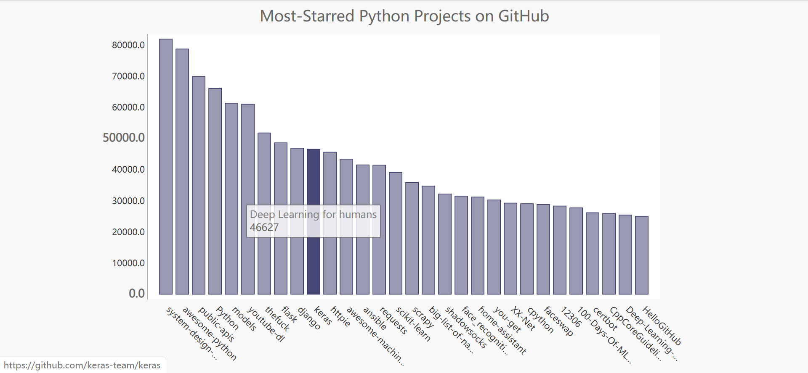

No.3 基于Python的数据可视化 Data Visualization 前言 好久不见，小半年之后，我又重新开始了博客之旅，关于近期的经历与反思，我会另外成文。今天，让我们来利用Python是实现一点简单的数据可视化。
数据可视化是指通过可视化表示来探索数据，它与数据挖掘紧密相关，而数据挖掘是指使用代码来探索数据集的规律和关联。漂亮地呈现数据关乎的并非仅仅是漂亮的图片，以引人注目的间接方式呈现数据，让观看者明白其意义，发现数据集中原本未意识到的规律和意义。当然，绘图的效果非常重要，可视化一度取代GIS成为了推动计算机图形学发展的重要因素。
眼下最流行的工具之一是matplotlib，是一个数学绘图库；我们还将使用Pygal包，它专注于生成适合在数字设备上显示的图表，通过它我们可以在用户与图表交互时突出元素以及调整大小，还可以调整整个图表的尺寸使其适应不同屏幕。
装好两个库，我们就可以开始可视化之旅啦。
附：matplotlib画廊 http://matplotlib.org 点击画廊中的图表可以查看用于生成图表的代码。
计划实现些什么？
实现
生成数据
绘制简单的折线图
绘制随机漫步散点图
用Pygal模拟掷骰子绘制直方图
下载数据的可视化
使用Web API
生成数据 plot() 绘制简单的折线图 利用plot()，实在过于简单，仅附上代码。
1 2 3 4 5 6 7 8 9 10 11 12 13 14 15 16 17 import matplotlib.pyplot as pltinput_values = list(range(1 ,1001 )) squares = [x**2 for x in input_values] plt.plot(input_values,squares,linewidth = 5 ) plt.title("Square Numbers" ,fontsize = 24 ) plt.xlabel("Value" ,fontsize = 14 ) plt.ylabel("Square of Value" ,fontsize = 14 ) plt.tick_params(axis = 'both' ,labelsize = 14 ) plt.show()
scatter() 绘制散点图 
1 2 3 4 5 6 7 8 9 10 11 12 13 14 15 16 17 18 19 20 21 22 23 24 25 26 27 28 29 import matplotlib.pyplot as pltinput_values = list(range(1 ,1001 ,100 )) squares = [x**2 for x in input_values] plt.scatter(input_values, squares, cmap = plt.cm.Blues, edgecolor = 'none' , s=10 ) plt.title("Square Numbers" ,fontsize = 24 ) plt.xlabel("Value" ,fontsize = 14 ) plt.ylabel("Square of Value" ,fontsize = 14 ) plt.tick_params(axis = 'both' ,labelsize = 14 ) plt.axis([0 ,1100 ,0 ,1100000 ]) plt.savefig('squares_plot.png' ,bbox_inches = 'tight' )
绘制随机漫步散点图 随机漫步是这样行走得到的路径：每一次行走是完全随机的，没有明确的方向，结果是由一系列随机决策决定的。在自然界、物理学、生物学、化学和经济领域，随机漫步都有其实际用途。
创建 RandomWalk() 类 该类随机地选择前进方向，需要三个属性：其中一个是存储随机漫步次数的变量，其他两个是列表，分别存储随机漫步经过的每个点的x和y坐标。
在方法fill_walk() 中使用choice() 模拟随机选择方向和步长，特判原地踏步的情况，将x_step与x_values中的最后一个值self.x_values[-1]相加，获得下一个点的x坐标，并将其附在x_values的末尾。
1 2 3 4 5 6 7 8 9 10 11 12 13 14 15 16 17 18 19 20 21 22 23 24 25 26 27 28 29 30 31 32 33 34 35 36 37 from random import choiceclass RandomWalk () : """ 生成随机漫步数据的类 """ def __init__ (self, num_points = 5000 ) : self.num_points = num_points self.x_values = [0 ] self.x_values = [0 ] def fill_walk (self) : """计算随机漫步包含的所有点""" while len(self.x_values) < self.num_points: x_direction = choice([1 ,-1 ]) x_distance = choice([0 ,1 ,2 ,3 ,4 ]) x_step = x_direction * x_distance y_direction = choice([1 ,-1 ]) y_distance = choice([0 ,1 ,2 ,3 ,4 ]) y_step = y_direction * y_distance if x_step == 0 and y_step == 0 : continue next_x = self.x_values[-1 ] + x_step next_y = self.y_values[-1 ] + y_step self.x_values.append(next_x) self.y_values.append(next_y)
绘制随机漫步图 1 2 3 4 5 6 7 8 import matplotlib.pyplot as pltfrom randow_walk import RandomWalkrw = RandomWalk() rw.fill_walk() plt.scatter(rw.x_values,rw.y_values, s=15 ) plt.show()
模拟多次随机漫步 将上述代码放在while循环中，在不多次运行程序的情况下模拟多次随机漫步，每次各不相同。每次关闭查看器后选择是否再次模拟。
1 2 3 4 5 6 7 8 9 10 11 12 13 import matplotlib.pyplot as pltfrom randow_walk import RandomWalkwhile True : rw = RandomWalk() rw.fill_walk() plt.scatter(rw.x_values,rw.y_values, s=15 ) plt.show() keep_running = input("Make another walk? y/n:" ) if keep_running == 'n' : break
样式及尺寸 使用range生成一个数字列表，将参数c设为point_numbers，指定颜色映射Blues，随机漫步图从浅蓝渐变为深蓝。

1 2 point_numbers = list(range(rw.num_points)) plt.scatter(rw.x_values,rw.y_values, c = point_numbers, cmap = plt.cm.Blues, edgecolors='none' , s=2 )
重绘起点和终点，以突出。
1 2 3 plt.scatter(0 ,0 , c = 'green' , edgecolors='none' , s=30 ) plt.scatter(rw.x_values[-1 ],rw.y_values[-1 ], c = 'red' , edgecolors='none' , s=30 )
隐藏坐标轴。
1 2 3 plt.axes().get_xaxis().set_visible(False ) plt.axes().get_yaxis().set_visible(False )
调整matplotlib输出的尺寸以适应屏幕大小，在绘图前调用。
1 2 plt.figure(dpi = 128 , figsize = (10 ,6 ))


最终，我们调整点的大小为2，绘制出了较为好看的图片。
用Pygal模拟掷骰子绘制直方图 用随机数模拟骰子 1 2 3 4 5 6 7 8 9 10 11 12 from random import randintclass Die () : """A class representing a single die.""" def __init__ (self, num_sides=6 ) : """Assume a six-sided die.""" self.num_sides = num_sides def roll (self) : """"Return a random value between 1 and number of sides.""" return randint(1 , self.num_sides)
分析结果并绘制直方图 
调用pygal库绘制直方图，展现同时扔两个骰子点数和的结果。
1 2 3 4 5 6 7 8 9 10 11 12 13 14 15 16 17 18 19 20 21 22 23 24 25 26 27 28 29 30 31 32 from die import Dieimport pygaldie_1 = Die() die_2 = Die(10 ) results = [] for roll_num in range(50000 ): result = die_1.roll() + die_2.roll() results.append(result) frequencies = [] max_result = die_1.num_sides + die_2.num_sides for value in range(2 , max_result+1 ): frequency = results.count(value) frequencies.append(frequency) hist = pygal.Bar() hist.title = "Results of rolling a D6 and a D10 50,000 times." hist.x_labels = ['2' , '3' , '4' , '5' , '6' , '7' , '8' , '9' , '10' , '11' , '12' , '13' , '14' , '15' , '16' ] hist.x_title = "Result" hist.y_title = "Frequency of Result" hist.add('D10 + D10' , frequencies) hist.render_to_file('dice_visual.png' )
下载数据 前文主要是根据少量数据或生成数据来作图，而实际应用时常常需要操作大量数据。二者的区别在于，前者可以写入程序中，后者则往往涉及文件、API的读取与使用。
CSV数据 CSV是以逗号分隔的值的意思，这样的数据最易处理。接下来，我们将用样例代码和锡特卡的天气数据来熟悉一下csv文件的处理。
分析文件头并读取数据 next()方法返回文件的下一行；strptime将字符串转为datetime对象。
1 2 3 4 5 6 7 8 9 10 11 12 13 14 15 16 17 18 19 20 21 22 23 24 import csvfrom datetime import datetimefrom matplotlib import pyplot as pltfilename = 'death_valley_2014.csv' with open(filename) as f: reader = csv.reader(f) header_row = next(reader) dates, highs, lows = [], [], [] for row in reader: try : current_date = datetime.strptime(row[0 ], "%Y-%m-%d" ) high = int(row[1 ]) low = int(row[3 ]) except ValueError: print(current_date, 'missing data' ) else : dates.append(current_date) highs.append(high) lows.append(low)
绘制气温图表
fig.autofmt_xdate()绘制斜的标签以免重叠；
fill_between(dates, highs, lows, facecolor=‘blue’, alpha=0.1)用于给两条线之间的绘图区着色；
try-except-else结构处理特殊数据
1 2 3 4 5 6 7 8 9 10 11 12 13 14 15 fig = plt.figure(dpi=128 , figsize=(10 , 6 )) plt.plot(dates, highs, c='red' , alpha=0.5 ) plt.plot(dates, lows, c='blue' , alpha=0.5 ) plt.fill_between(dates, highs, lows, facecolor='blue' , alpha=0.1 ) title = "Daily high and low temperatures - 2014\nDeath Valley, CA" plt.title(title, fontsize=20 ) plt.xlabel('' , fontsize=16 ) fig.autofmt_xdate() plt.ylabel("Temperature (F)" , fontsize=16 ) plt.tick_params(axis='both' , which='major' , labelsize=16 ) plt.show()

json数据
数据来源
然而免费的json来源常常有诸多限制，尚没有找到让人想要处理的数据，留白。
使用API Web API是网站的一部分，用于与使用非常具体的URL请求特定信息的程序交互。这种请求称为API调用。请求的数据将以易于处理的格式返回。依赖于外部数据源的大多数应用程序都依赖于API调用。
Git & Github API调用 响应的前几行如下：可以看到，当前GitHub上有4765912个Python项目；“incomplete_results”: false,倘若请求不成功，这个返回值为true。
{
处理API响应 1 2 3 4 5 6 7 8 9 10 11 12 import requestsimport pygalfrom pygal.style import LightColorizedStyle as LCS, LightenStyle as LSurl = 'https://api.github.com/search/repositories?q=language:python&sort=stars' r = requests.get(url) print("Status code:" , r.status_code) response_dict = r.json() print("Total repositories:" , response_dict['total_count' ])
流程如下：导入requests模块，存储API调用的URL，使用requests模块的get方法来执行调用，状态码status_code为200表示请求成功；随后，我们将API响应存储在一个变量中。响应字典包含三个键：‘items’, ‘total_count’, ‘incomplete_results’.
1 2 3 4 5 6 7 8 9 10 11 12 13 repo_dicts = response_dict['items' ] names, plot_dicts = [], [] for repo_dict in repo_dicts: names.append(repo_dict['name' ]) plot_dict = { 'value' : repo_dict['stargazers_count' ], 'label' : repo_dict['description' ], 'xlink' : repo_dict['html_url' ], } plot_dicts.append(plot_dict)
与’items’相关联的值是一个列表，其中包含很多字典，每一个字典都包含关于一个Python仓库的信息。我们将字典列表存在repo_dicts中，提取一个字典打印后发现共有68个键，遍历字典列表提取出感兴趣的信息存入新字典。
监视API的速率限制 大多数API都存在速率限制，即在特定时间内可执行的请求数存在限制。获悉限制，在https://api.github.com/rate_limit 查看。
使用Pygal可视化仓库 
创建交互式的条形图，单击条形可以进入项目主页。可视化部分代码如下：
1 2 3 4 5 6 7 8 9 10 11 12 13 14 15 16 17 18 19 20 my_style = LS('#333366' , base_style=LCS) my_config = pygal.Config() my_config.x_label_rotation = 45 my_config.show_legend = False my_config.title_font_size = 24 my_config.label_font_size = 14 my_config.major_label_font_size = 18 my_config.truncate_label = 15 my_config.show_y_guides = False my_config.width = 1000 chart = pygal.Bar(my_config, style=my_style) chart.title = 'Most-Starred Python Projects on GitHub' chart.x_labels = names chart.add('' , plot_dicts) chart.render_to_file('python_repos.svg' )

后记 附录：那些不经意间学到的事
pip安装pygal 出现“Read time out，port 443”
443 端口即网页浏览端口，主要是用于HTTPS服务，是提供加密和通过安全端口传输的另一种HTTP目前怀疑科学上网质量不高，导致time out
解决方案：多试了几次，在进度条不动时按了ctrl+z???
计网涉及方方面面。
可以做的有趣的事
去找有趣的json数据集进行分析和可视化，这些工具实在是太好用了。
写在后面 今年回家比较仓促，没带什么书，假期又比预想中长些，对着电子屏幕难免有些抓狂。所幸之前给爸爸买的《Python编程：从入门到实践》还有可取之处，这才找回了看书写代码的感觉。整整五个月没有认真写过博客了，跟队友讨论问题后点开了自己夏天写的博客，还能记起当时的激情与欢欣。这些日子有过专注与投入，但更多的是自我的迷失和作息的崩溃，直到今天重新借助博客整理所学并且因过于投入而错过了主队的比赛，才算是看到回归life in control状态的希望。写完这篇文章，我才真真切切地觉得新的一年开始了，我或许需要一份总结和一个展望。